← Film
02 / 07
Ember
One redscale roll through New York: parks, corners and subway platforms reduced to a single burning colour, moving from daylight down into the tunnels.
-
01 / 13 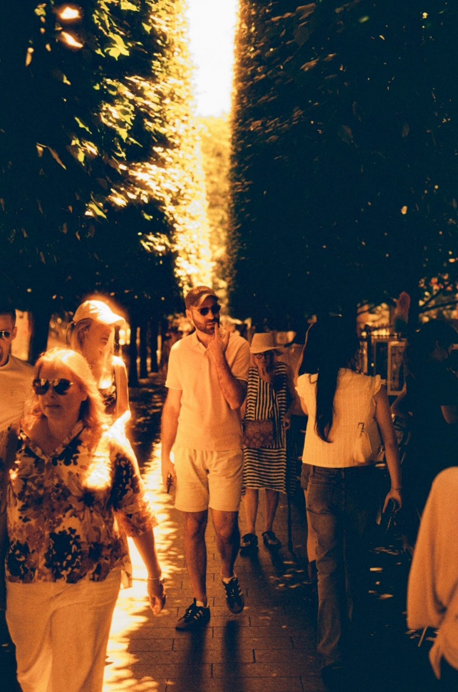
02 / 13 -
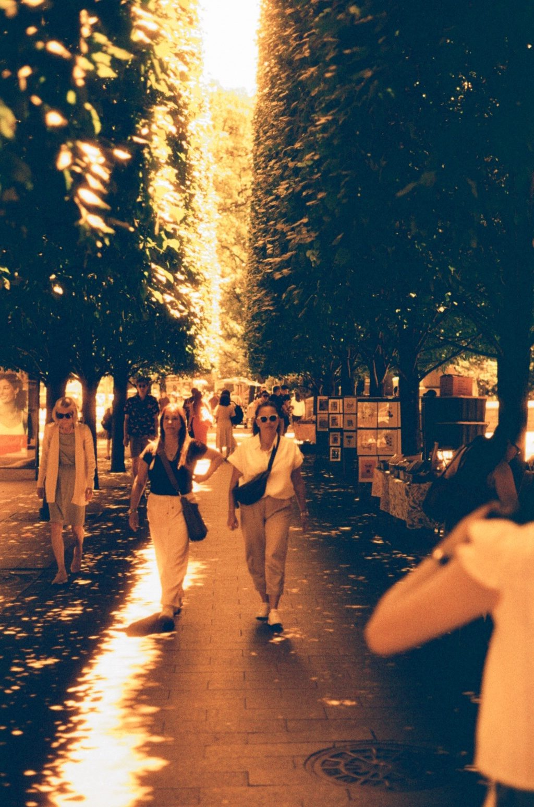
03 / 13 -
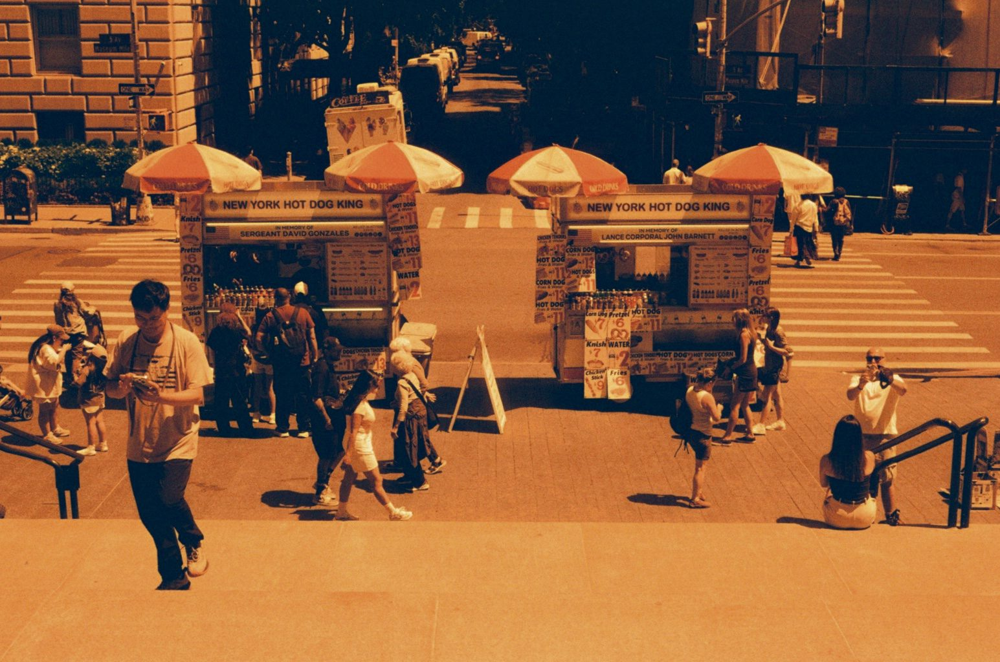
04 / 13 -
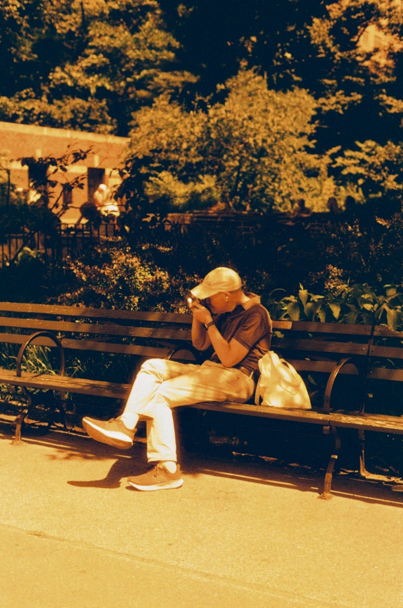
05 / 13 -
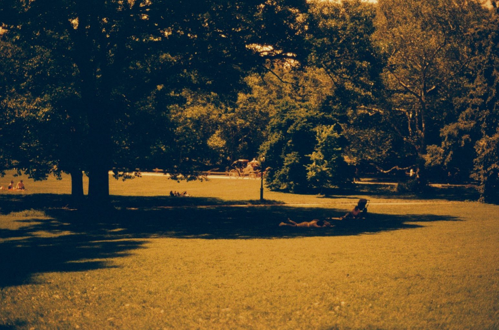
06 / 13 -
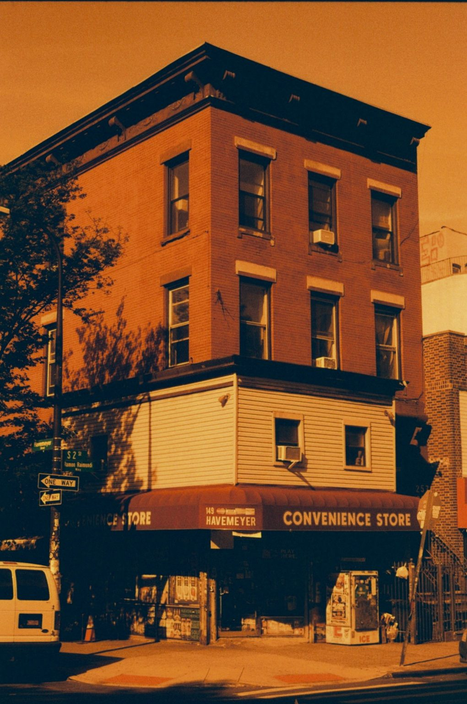
07 / 13 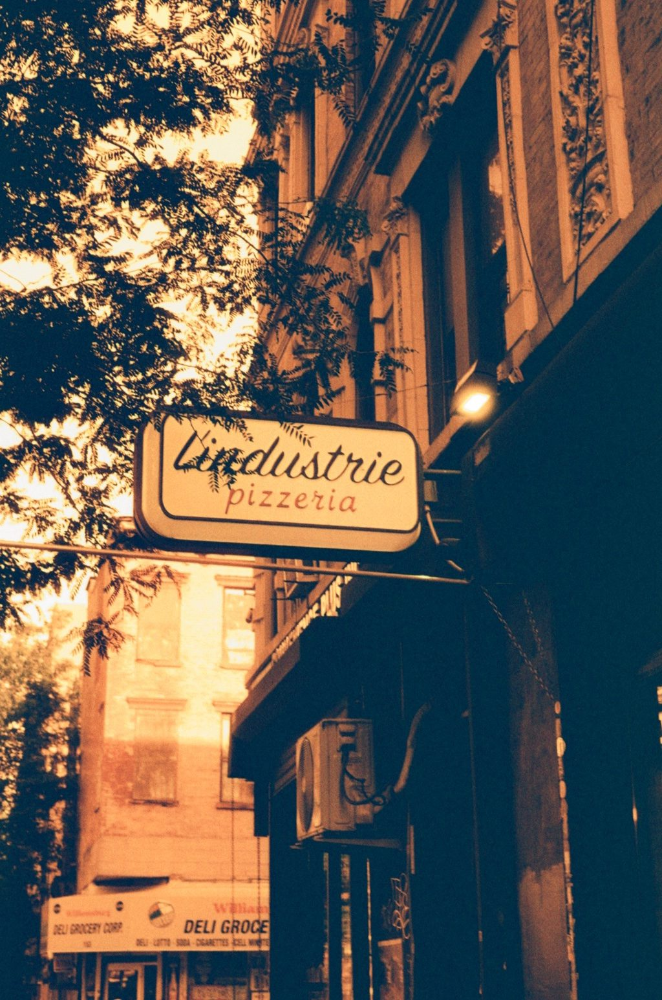
08 / 13 -
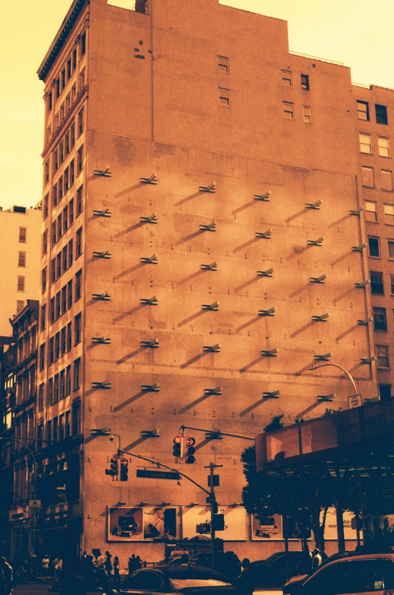
09 / 13 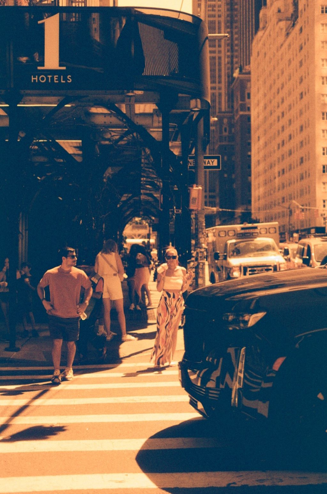
10 / 13 -
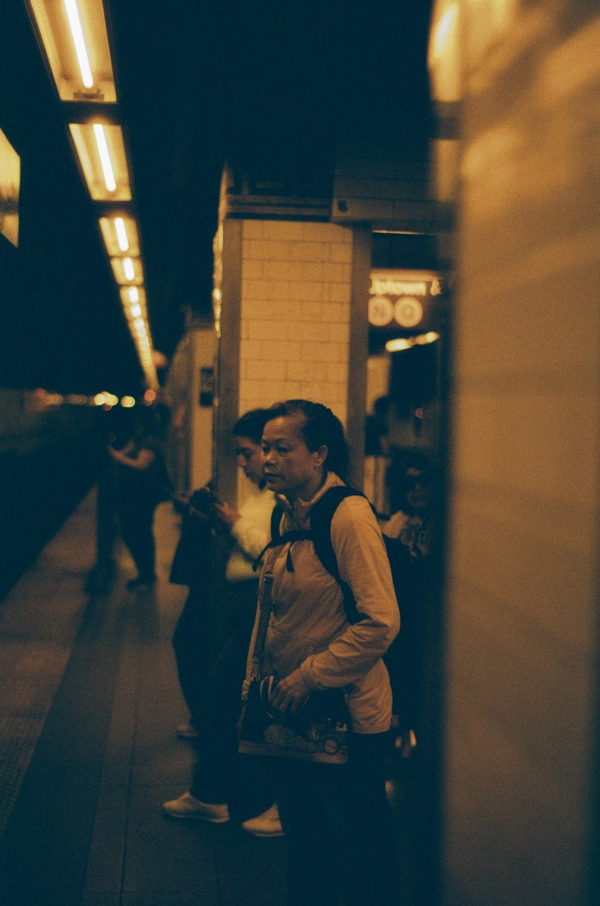
11 / 13 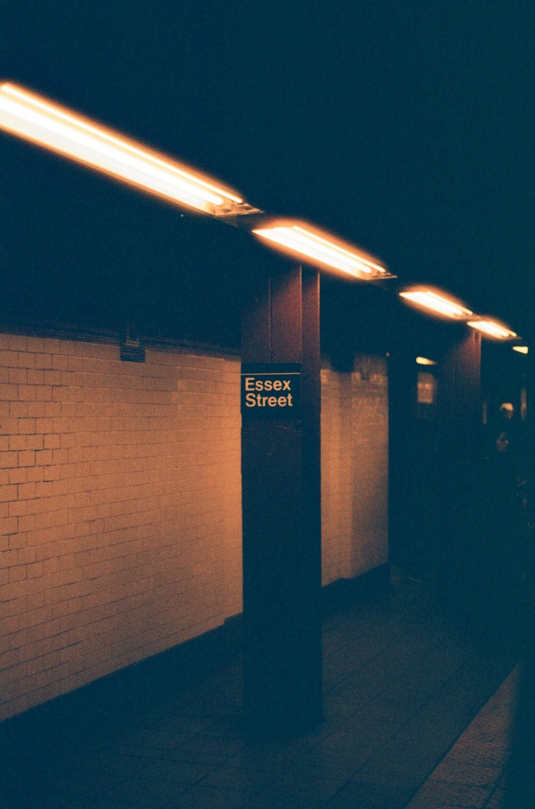
12 / 13 -
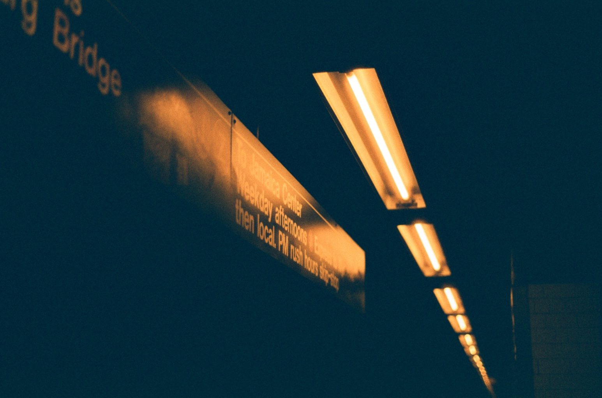
13 / 13